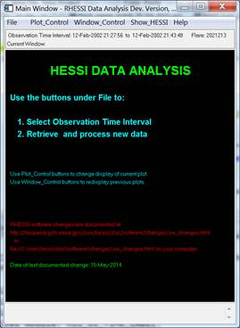
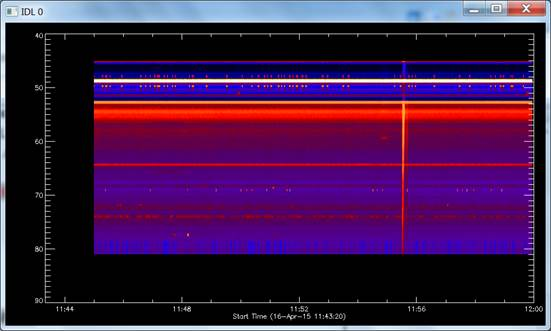
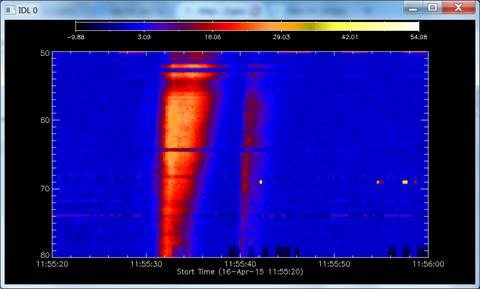
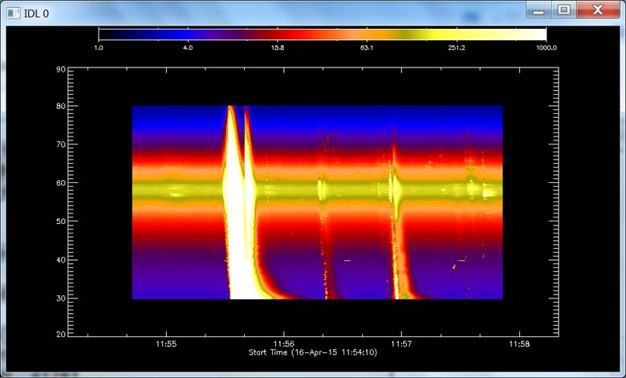
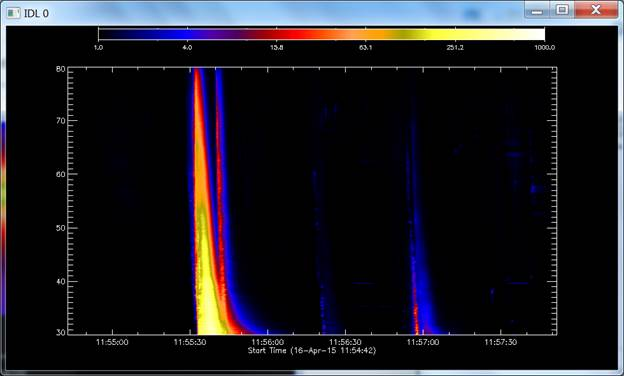
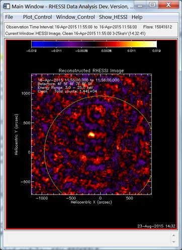
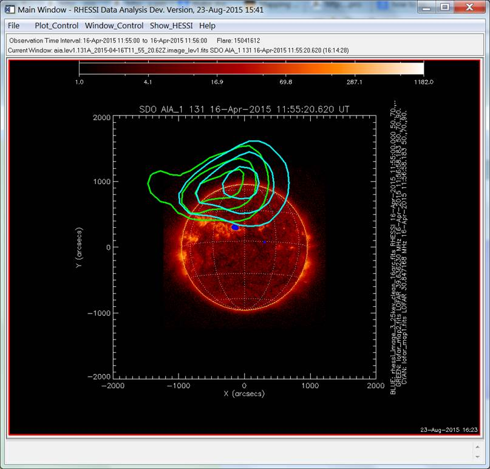

Tutorial: Introduction to solar soft, solar radio (and
auxiliary data)
Prepared by Eduard Kontar
All tutorial files can be downloaded here: http://www.astro.gla.ac.uk/users/eduard/lectures/cesra/
(last updated: 23/08/2015 21:43)
|
Pre-school installation guide for IDL, SSW and Perl (here) To upgrade SSW (requires Perl installation) (extensive FAQ here) IDL> ssw_upgrade,/loud,/spawn,/passive_ftp To check your installation open RHESSI GUI IDL> hessi  To add new instrument (e.g. Nancay which is a part of radio package): IDL> setssw_windows,
/nrh * Following instruments selected: radio/nrh * Mission level setup files * Instrument level setup files * Personal startup
files Executing:
C:\ssw\site\setup\PERSONAL_STARTUP_WINDOWS.pro Plotting
dynamic radio spectrum To analyse and plot the radio spectrum, use IDL based solar software SSW with ‘radio’ package required (documentation is available here). As an example, one can use this simple code IDL>
radio_spectro_fits_read,'GLASGOW_20150416_114500_59.fit',data,time,freq IDL> loadct,5 % LOADCT:
Loading table STD GAMMA-II IDL> spectro_plot,data,time,freq % Compiled module:
SPECTRO_PLOT. % Compiled module:
SPECTRO_PLOT2. % Compiled module:
AXIS_GET_EDGES. % Compiled module:
AXIS_GET_EXPANDED_RANGE. % Compiled module:
INTERP_IMAGE. % Compiled module:
INTERPOL. % Compiled module:
CSCALE. %
Compiled module: DSCALE.  IDL> trange='2015-Apr-16 '+['11:55:20','11:56:00'] IDL> spectro_plot2,data,time,freq,timerange=trange, yrange=[50,80] IDL> data_bg = constbacksub(data,/auto) % Compiled module:
CONSTBACKSUB. Running Constant Backsub algorithm Version 2.1 % Compiled module: AVG. % Compiled module:
SIG_ARRAY. % Compiled module:
AVERAGE. % Compiled module:
WHERE_MISSING. % Compiled module:
IS_NOT_MISSING.  Restoring
LOFAR dynamic spectrum: IDL> restore,'total_lofar_ds.sav',/v % RESTORE: Portable (XDR)
SAVE/RESTORE file. % RESTORE: Save file
written by eduard@helios, Sun Aug 23 16:48:05 2015. % RESTORE: IDL version
8.3 (linux, x86_64). % RESTORE: Restored
variable: DS. IDL> help,ds ** Structure
<12bcc530>, 4 tags, length=297376520, data length=297376520, refs=1: TITLE STRING 'L340180 observation total beam
integrated Stokes_0' FREQS DOUBLE Array[4128] TIME DOUBLE Array[17999] STOKES_0 FLOAT Array[17999, 4128] Plotting
the data: IDL> spectro_plot2,ds.stokes_0,ds.time,ds.freqs,/log,drange=[1,1000]  IDL> normds=rebin(ds.stokes_0[0,*],17999,4128) IDL> spectro_plot2,ds.stokes_0/normds,ds.time,ds.freqs,/log,drange=[1,1000],trange='2015-Apr-16 '+['11:55:00','11:57:00'],/xs,yrange=[30,80]  RHESSI and
X-ray images Let
us make RHESSI images using GUI of RHESSI software. The details about how
RHESSI imaging can be found at RHESSI pages (http://hesperia.gsfc.nasa.gov/rhessi3/pics/rhessi_imaging_kontar_2009.pdf)  SDO and EUV images: IDL> a = vso_search(trange[0],trange[1], wave='131', inst='aia',/url) Records Returned : JSOC :
4/4 Records Returned :
SDAC_AIA : 0/0 IDL> help,a A STRUCT = -> VSORECORD Array[4] Checking the data location: IDL>
print,a.url Downloading the files: IDL> b = vso_get(a) % Compiled module:
VSO_GET. %
VSO_GET: This will download 4 file(s) Checking if files downloaded: IDL> afiles=findfile('aia*.fits') IDL> print,afiles aia.lev1.131A_2015-04-16T11_55_20.62Z.image_lev1.fits
aia.lev1.131A_2015-04-16T11_55_32.62Z.image_lev1.fits aia.lev1.131A_2015-04-16T11_55_44.62Z.image_lev1.fits
aia.lev1.131A_2015-04-16T11_55_56.62Z.image_lev1.fits Combining images using plotman Plotman (PLOT MANAGER (see details here http://hesperia.gsfc.nasa.gov/ssw/gen/idl/plotman/doc/plotman_help.htm))
software to manipulate various maps. Or using RHESSI GUI and synoptic data access 
|
|
|
|
|